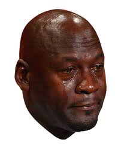

About Me
Born into a humble, middle-class family in Newark, Delaware, Wyatt Starr has not lived long enough to achieve any premonitions of grandeur. His first exposure to the arts was experienced vicariously through his father, who photographed as a hobby/side hustle. He is currently interested in finding the perfect balance between doing as little as possible and doing enough to not get yelled for doing nothing. Wyatt also has a waning interest in tortoises, such as how to get one, how to care for one, and what to name it (Working name is Tortuga Pugachev). He is a savant at eating just enough chips as to not want to throw away the bag since it would seem like a waste, but the chips in the bag are in such short supply it would be disappointing and sad to finish eating the bag of chips. Wyatt is currently a sophomore at Cab Calloway School of the Arts and is majoring in Digital Media.
Resume
Skills
Education/General Information
Awards/Volunteering
Graphic Design
The assignment I received for this piece was to create a poster, the subject I chose was "The Shining" since when I was thinking of some of my favorite movies I thought, The Shining. When I thought of that movie one of the first things that came into my mind was the axe used in the final scenes of the movie. The reference I used for the axe was a picture of the actual prop from the movie, my goal was to have the axe look as authentic as possible. For the text that says the title I first wrote the letters as neatly as possible, then add zigzagging lines along the stems and curvatures of the letterforms. Personally I think the piece turned out better than I expected it to, there was a clear dominant element but it didn’t shutout the text. The text being just big and jagged, but not too jagged, to be read from a distance.

The assignment for this project was to first take photographs, and then utilize Adobe Photoshop to mesh those photos into something impossible. I first took photographs of an animal pen, followed by train tracks, and then the goat. I got my inspiration for this piece from the humble people of Lancaster and their subtle reverance for how things used to be back in the 1600s. That subtlety is what I wanted to show in this piece.
Writing
Todd Pinkman came home after a long day of work and promptly fell face first onto his couch and screamed the anxiety away into a pillow. After a solid five minutes of screaming, he went to relieve himself in the bathroom, sat back down on his couch and flipped on the news. There was his daily dosing of murders, suicides, murder-suicides, the usual media diet that Americans of all ages experienced. Todd wasn’t paying attention to the news; instead he was spacing out and letting his mind go blank until one story had caught his attention. It was the one good thing the news had to offer: the announcement that the McRib was coming back this autumn season. Oh the euphoria Todd felt at the hearing of this news, it was the only thing he liked about autumn. It was around the time McDonalds brought back their patron saint of savory, their squire of succulence, their prince of pork.
Todd rushed out his apartment door, nearly forgetting his keys, wallet, and wits about him. It was the time to rejoice for the McRib, and apparently for Todd the time to become so overwhelmed with joy that he should forget the speed limit. Today must have been Todd’s miracle day, since he went fifty-five miles per hour in a twenty-five miles per hour zone without killing anyone (or himself.) The drive-thru became a dream-like state for him, everything was slow, peaceful, and better yet, he was being handed slabs of heaven condensed into pork, pickles, onions, and over seventy other ingredients that vary in pronounceability.
Todd burst home with six paper bags of McRibs, he set them all down on his small kitchen table and proceeded to eat all eleven McRibs in one sitting. His trash can was slowly becoming filled sauce packets, napkins, and self-control.
Todd fell into a sleep so deep one would think he was comatose. This sleep offered little chance for him to be interrupted. Finally, Todd opened his eyes and looked around his small, dark room. The only thing illuminating his room was a sliver of light coming in from his living room. He saw nothing and closed his eyes so he could go back to sleep until he realized one thing, he had turned off all the lights in the apartment before he went to bed. Or had he? He wasn’t sure. Todd went to get out of bed, but before he could get the sheets off of him, the door started to open. Todd was too shocked to move and he watched as the small sliver of light expanded to a rectangle of yellow. The only thing blocking the light was the outline of a blob, the blob was a rounded triangle with surprisingly slim legs. The blob walked closer and Todd saw the coloration of the monster, it was a sickly, velvety purple. The closer the blob got the more Todd could see of it, it’s face looked like a melted smiley face. The skin looked like it was made from the cheap fabric of the toys won at carnival games. Todd then had the brilliant thought of turning on the lamp, he fumbled with the cord for five seconds and finally turned the lamp on to reveal the blob was everyone’s favorite purple abomination: Grimace.